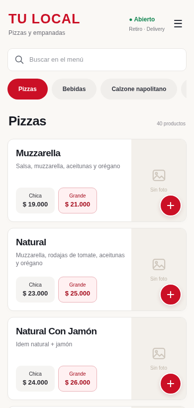
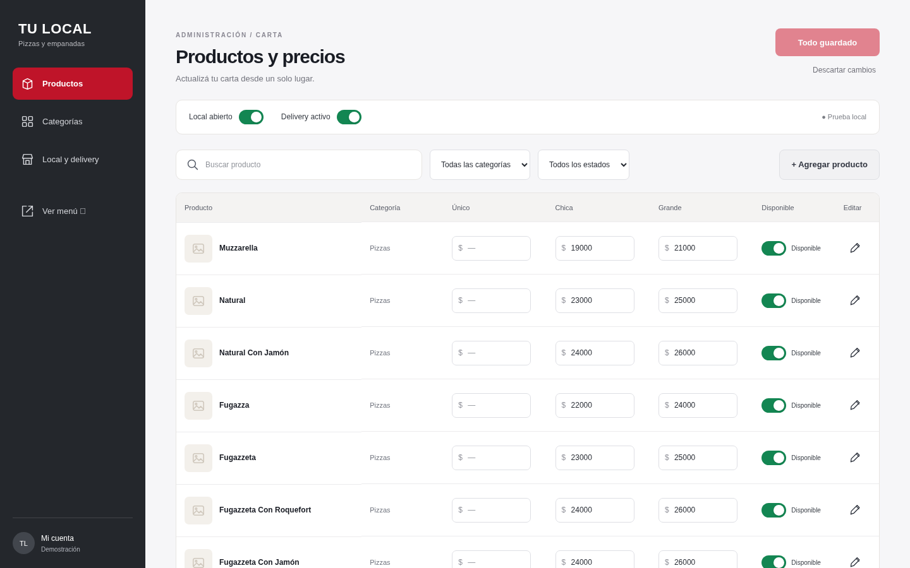

Escanean el QR
Abren tu menú desde el navegador del celular, sin instalar una aplicación.
Un menú QR para restaurantes, bares y cafeterías. Tus clientes eligen desde el celular. Vos actualizás precios y productos desde tu propio panel.

Interfaz de ejemplo · Marca y datos ilustrativos
Una carta fácil de recorrer y un pedido listo para que tu local lo confirme.
Abren tu menú desde el navegador del celular, sin instalar una aplicación.
Recorren categorías, consultan precios y descripciones, eligen tamaños y arman su pedido.
Revisan los datos y envían el mensaje preparado. Tu local confirma disponibilidad, entrega y pago.
Entrás con tu usuario, editás los precios y guardás. También podés subir fotos, agregar productos y marcar lo que se agotó.

Editá varios productos juntos, como en una planilla.
Marcá qué está disponible y actualizá tu carta.
Habilitá el envío y ajustá su costo desde el panel.
Captura de una interfaz de ejemplo. No muestra datos de un cliente.
Una configuración inicial para preparar el menú y un abono mensual para mantener el servicio funcionando.
La carga inicial incluye hasta 50 productos. Después podés agregar más desde tu panel.
Abono mensual en pesos argentinos.
Configuración del menú y del panel, categorías, carga de hasta 50 productos, código QR y explicación de uso.
Nos compartís las fotos, las descripciones y los precios para la carga inicial.
Subdominio de STRELLA incluido. Dominio propio independiente, rediseños y funciones nuevas se evalúan por separado.
Cómo funciona el menú QR, qué podés administrar y qué incluye el servicio.
Es una carta digital que tus clientes abren desde el celular al escanear un código QR. Pueden consultar productos, descripciones, fotos y precios, y armar un pedido para enviarlo por WhatsApp.
Sí. Tenés un panel de administración con usuario y contraseña. Podés editar varios precios juntos y guardar los cambios, sin tocar código ni pedirnos cada ajuste.
Sí. Desde el panel podés agregar productos, editar nombres y descripciones, subir fotos y marcar qué está disponible. También podés organizar las categorías de tu carta.
Sí. Por ejemplo, una pizza puede tener precio para tamaño chico y grande. El cliente selecciona la opción antes de agregarla a su pedido.
El cliente elige sus productos, revisa el pedido y completa sus datos. Después abre WhatsApp con un mensaje preparado para enviar al local. El cliente debe enviarlo y tu negocio confirma la disponibilidad y la entrega.
Sí. Desde el panel podés habilitar o deshabilitar el delivery y ajustar su costo. El cliente elige entre las opciones disponibles al preparar su pedido.
La configuración inicial cuesta $80.000 ARS por única vez. El abono es de $30.000 ARS por mes e incluye hosting, alojamiento de imágenes, dirección web con subdominio, acceso al panel, mantenimiento y actualizaciones técnicas.
Incluye la configuración del menú digital y del panel administrador, la organización de categorías, la carga inicial de hasta 50 productos con fotos, descripciones y precios proporcionados por vos, la entrega del código QR y una explicación de uso.
No. Los 50 productos corresponden a la carga inicial que realiza STRELLA. Después podés agregar más productos desde tu panel administrador.
Sí. El abono incluye una dirección web con subdominio de STRELLA para tu menú. No incluye el registro de un dominio propio independiente.
No. El menú abre en el navegador del celular y necesita conexión a internet. Para enviar el pedido por WhatsApp, el cliente necesita poder acceder a ese servicio.
No. Mientras se conserve la dirección del menú, el QR sigue siendo el mismo. Quienes ya tengan la carta abierta pueden recargarla para ver los cambios.
Son las tareas técnicas para mantener el servicio en funcionamiento. Los rediseños y las funciones nuevas se evalúan por separado. Los precios, productos y fotos los podés administrar desde tu panel.
No. Esta versión permite consultar la carta y enviar pedidos por WhatsApp. El local acuerda el pago directamente con el cliente.
Contanos sobre tu local y vemos cómo organizar tu menú.